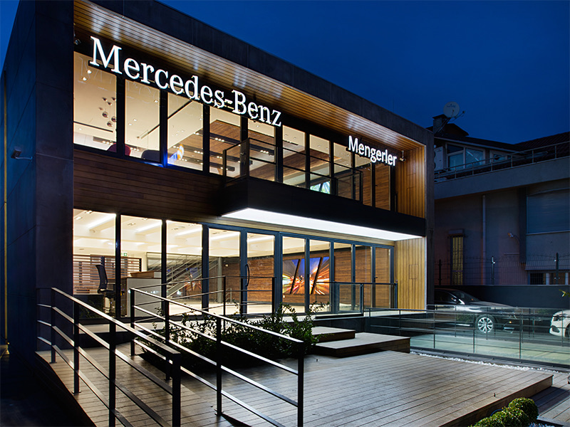

Boytorun Architects
Firma
Emirgan, İstanbul, 2000’den beri. Tasarım öncesinden uygulama ve kontrollüğe.
- Kuruluş
- 2000
- Ekip
- 11–50 kişi
- Ofis
- Emirgan, İstanbul
- Mercedes-Benz
- 2007’den beri bayi mimarisi
01Hakkımızda
Tasarımın başından imalatın son aşamasına.
- 01
Doğru anlamak
Müşterinin gereksinimlerini ve hedeflerini anlamak; her projede konuya uygun bir proje ekibi kurmak.
- 02
Kontrol bizde
Tasarımdan imalatın son aşamasına kadar işin kontrolü bizde; küçük işte de büyük projede de aynı özen.
- 03
Çağdaş ve özgün
Güncel malzeme ve teknolojinin detay çözümlerini bütçe ve zaman kısıtlarıyla birleştirmek.
İnsanların yaşadığı ve çalıştığı mekânlar için en uygun çevreyi tasarlarız.
02Kurucular
Yudum ve Semih Boytorun.
- Yudum BoytorunKurucu
- Semih BoytorunKurucu
03Rakamlar
Kanıtlanmış bir yol.
Mercedes-Benz için 2007’den bu yana bayi ve marka mekânları tasarlıyoruz; Türkiye, Bulgaristan, Kuzey Kıbrıs ve Ukrayna’da 26 tamamlanan ve süren MAR20X projesi.
- 2000yılından beri
- 27+yayınlanmış proje
- 26Mercedes-Benz MAR20X projesi, tamamlanan ve süren
- 6disiplin tek ekipte: tasarımdan mühendisliğe
04Güncel projeler
2024–2026
- 01Beymen Campus Ofisleri
- 02Brunello Cucinelli
- 03NetWork
- 04Mercedes-Benz Gülsoy Florya
- 05Mercedes-Benz Plovdiv (Bulgaristan)
- 06Durusu Milltown

İletişim
Yeni ofisinizi birlikte planlayalım.
Proje türü, yaklaşık alan ve şehir yeterli; gerisini birlikte netleştiririz.